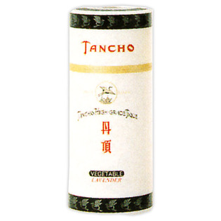

返回列表
产品名称：丹頂 チック 大

マンダム 丹頂 チック 大 １００ｇ
メーカー マンダム
JANコード 4902806104899
商品の特徴
○永年にわたり男たちの支持を集め、磨きぬかれた大人の香り。
○円熟したスタンダードナンバー。
成分・分量
ヒマシ油、ミツロウ、水添ヒマシ油、香料、キャンデリラロウ、ポリソルベート６０、コメヌカロウ、パラフィン、パルミチン酸アミド、ＢＨＴ、黄４、ＰＥＧ－５水添ヒマシ油、青１
用法及び用量
○蓋の中の白い緩衝材は お捨てください
○底の部分を少しずつ押し出してご使用ください
○出しすぎると上から押しても戻りません。出しすぎた場合は一度全部押し出してから再度底部より押し入れてください